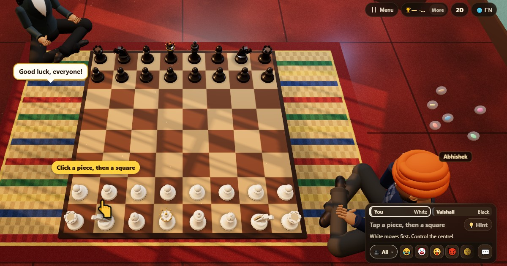
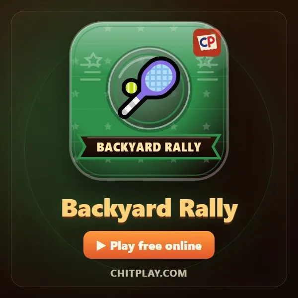

Игры для двоих

Два игрока — идеальное число для настоящего поединка: спрятаться не за кого, и каждый ход важен. Хотите долго думать или быстро посмеяться — для этого есть игра на двоих.
Вот лучшие игры для двоих, от вечной стратегии до молниеносных дуэлей, лицом к лицу или онлайн.
Бесплатные игры на ChitPlay
Все они бесплатны в браузере: против компьютера, онлайн или с друзьями, каждый на своём телефоне.





Классические игры, в которые можно играть где угодно
Большие пальцы
Сцепите пальцы с соперником и постарайтесь прижать его большой палец на счёт три.
Камень, ножницы, бумага
Считайте до трёх и показывайте жест: камень тупит ножницы, ножницы режут бумагу, бумага накрывает камень. До трёх побед.
Двадцать вопросов
Один игрок загадывает человека, животное или предмет. Остальные задают до двадцати вопросов, на которые можно ответить «да» или «нет».
Советы
- Меняйтесь, кто ходит первым: первый ход часто даёт преимущество.
- Играйте до двух побед, чтобы уравновесить случайную удачу.
- После долгой партии быстрая игра освежает настроение.
Вопросы
Какая игра лучшая для двоих?
Шахматы, Карром и Шашки — великая классика; для чего-то побыстрее попробуйте «Четыре в ряд» или Ship Fight на ChitPlay.
Могут ли двое играть онлайн с разных телефонов?
Да. На ChitPlay один игрок создаёт комнату, а второй заходит по коду или ссылке откуда угодно.